Featured Artists
Built around
the artist.
We help artists carry a song from first spark to final master, then shape the visuals and live moments that bring it into the world.
RecordingProductionMixingMasteringArtist mediaLive capture
In the room and beyond it
The people behind the sound.
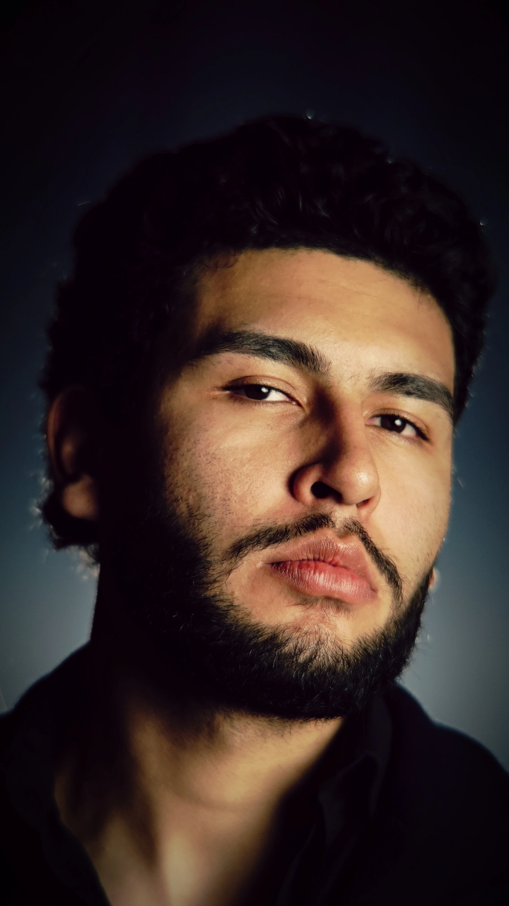
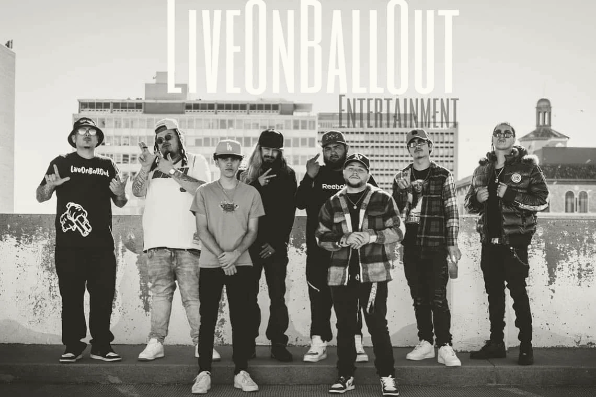
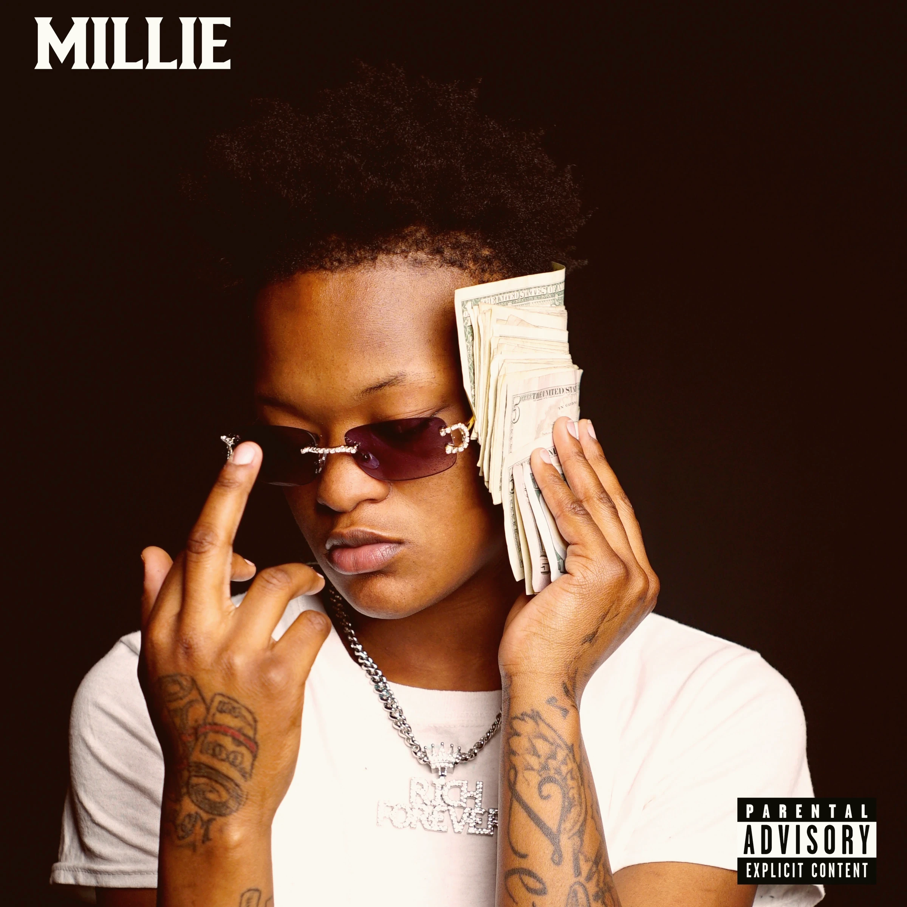
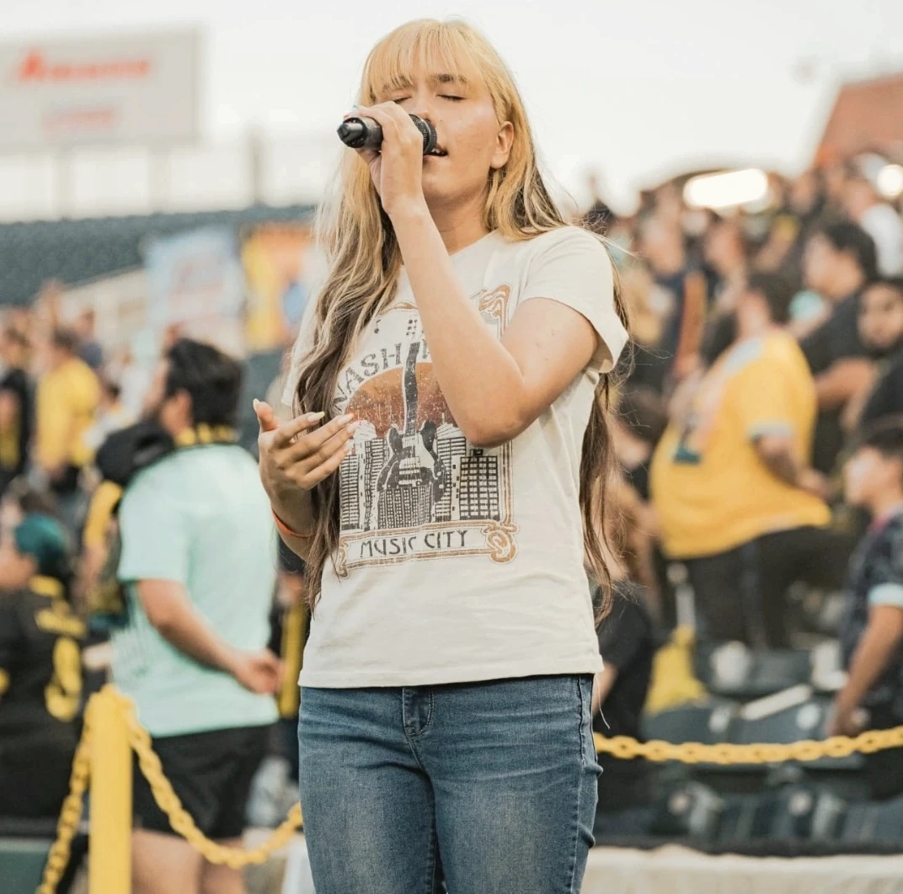
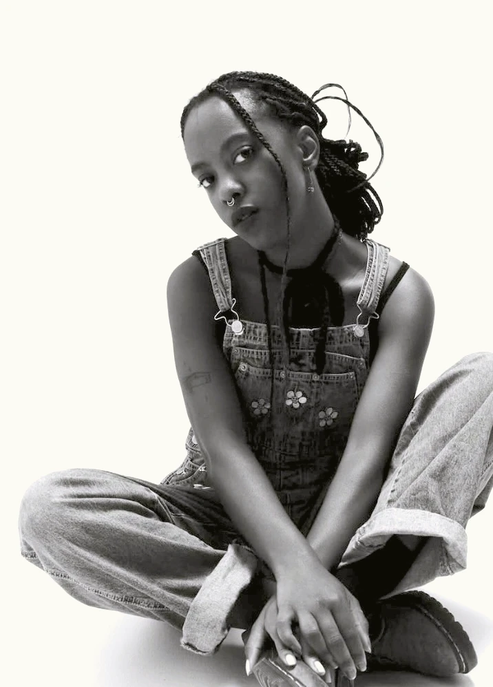
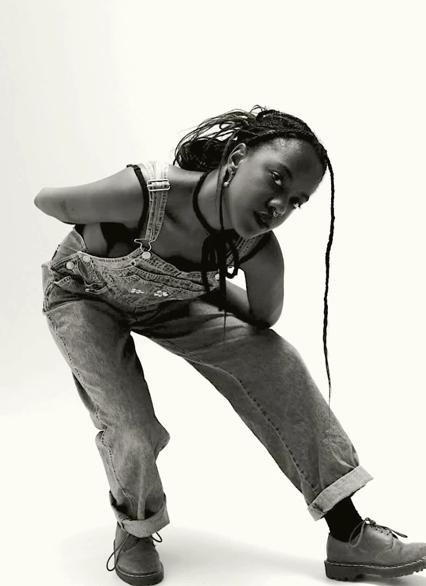
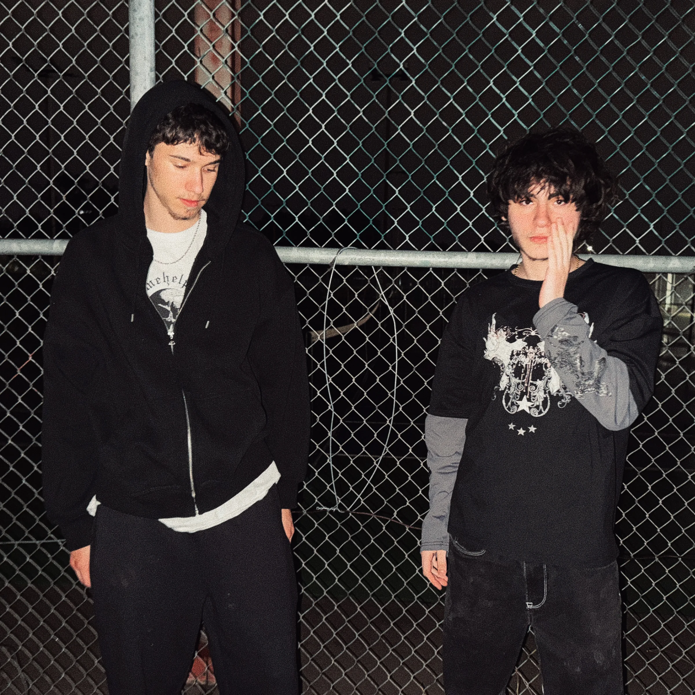
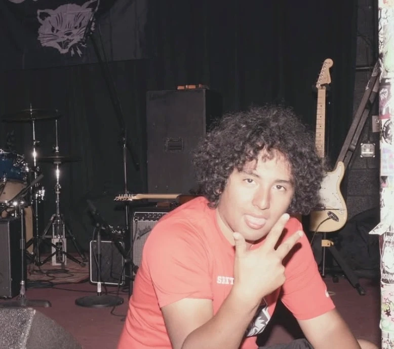
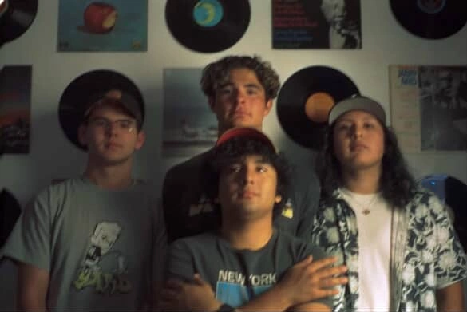
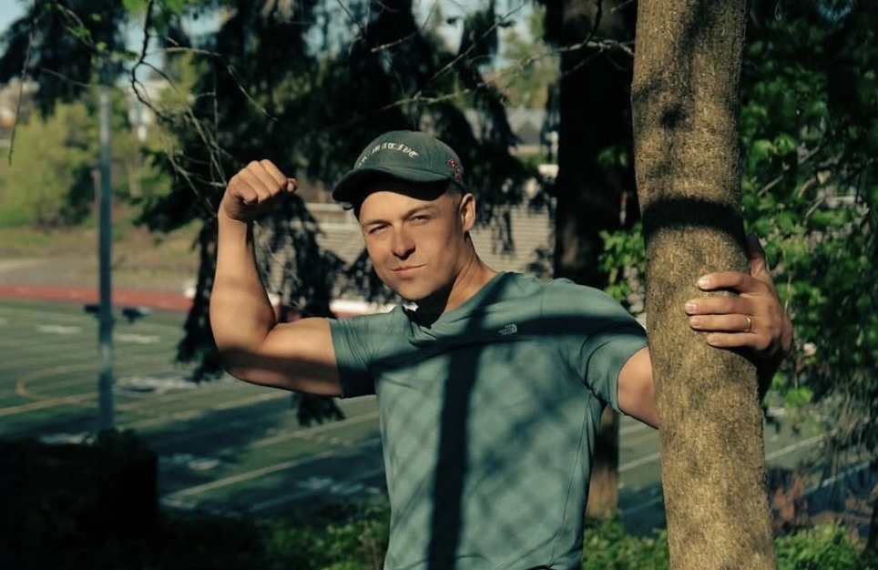

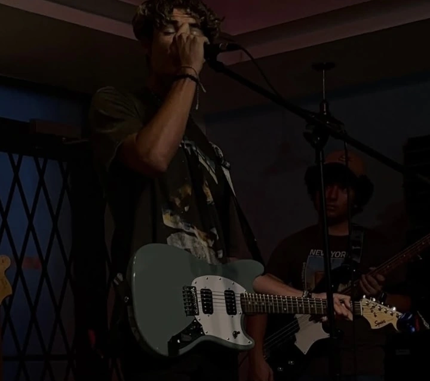
Your next record